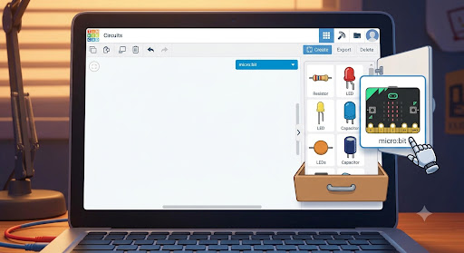
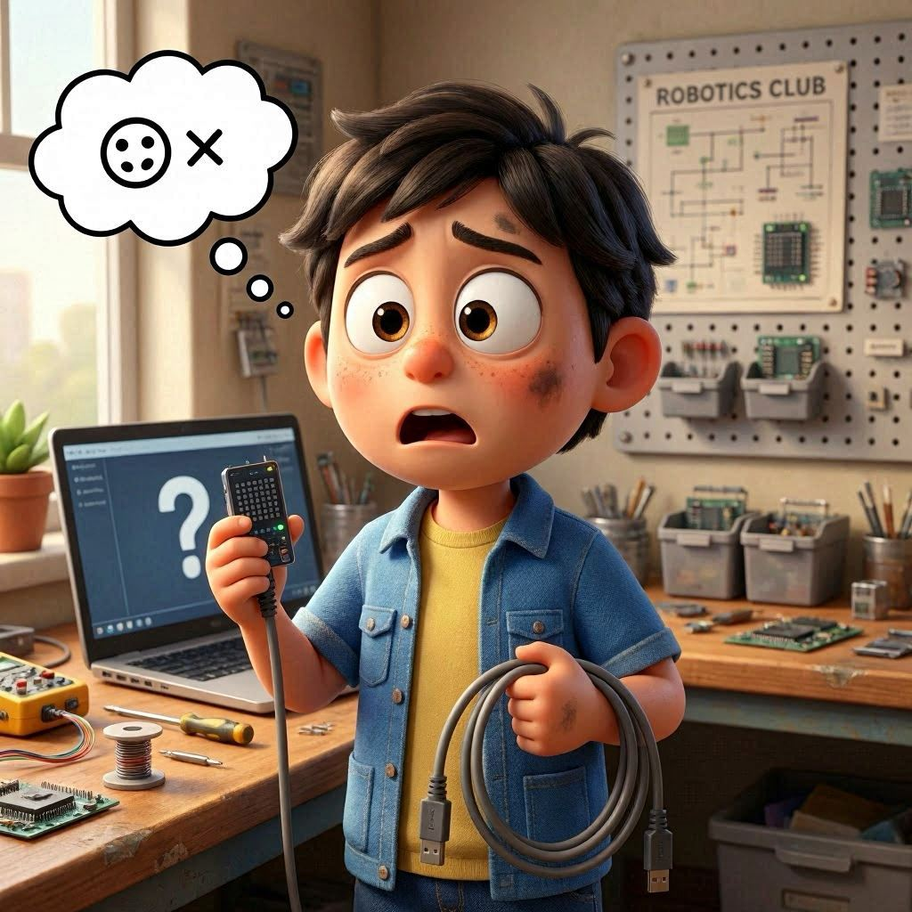
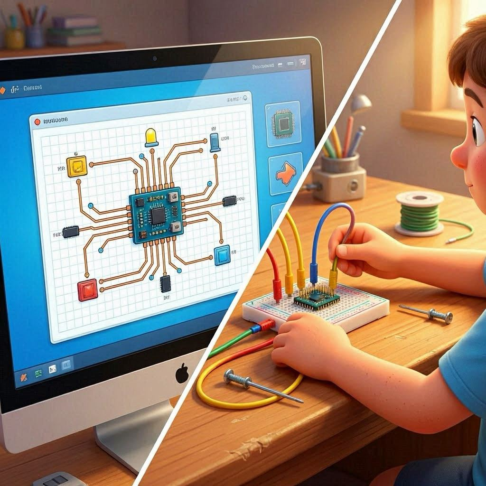
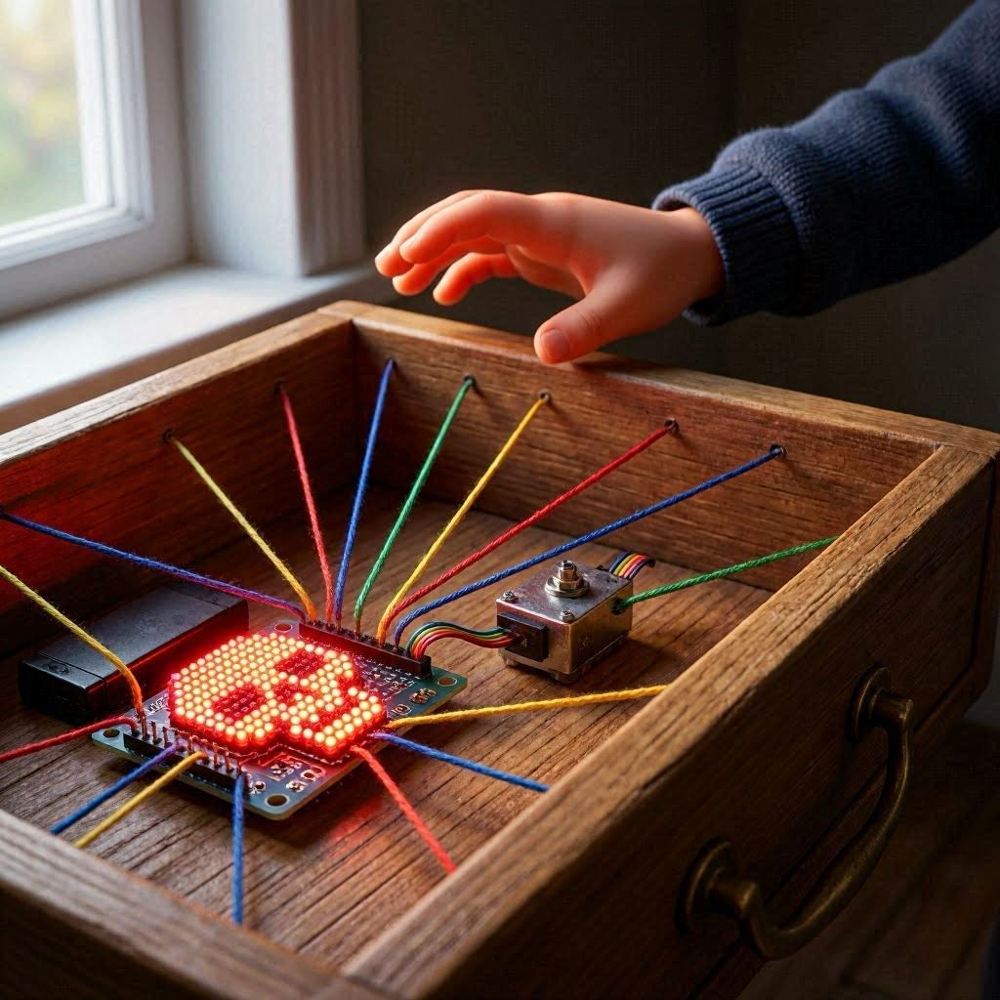
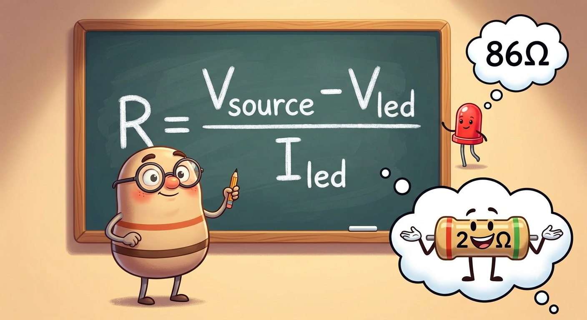

MANUAL TINKERCAD + MICRO:BIT
PARTE 1: O DESPERTAR DO TINKERCAD - O QUE É ISSO?
Se você acha que eletrônica é apenas para cientistas malucos com cabelos brancos eletrizados ou engenheiros da NASA, você está redondamente enganado! O Tinkercad é uma plataforma online gratuita da Autodesk que transforma a simulação de circuitos e a modelagem 3D em um autêntico videogame. Em vez de queimar componentes de verdade na sua mesa e respirar fumaça de solda (o que sua mãe ou seu bolso certamente odiariam), o Tinkercad permite que você exploda circuitos virtualmente sem qualquer prejuízo financeiro ou físico.
Neste manual, focaremos no motor de simulação de circuitos eletrônicos, utilizando como cérebro central o lendário BBC micro:bit. Prepare-se, pois vamos do zero absoluto até o controle físico do hardware, usando APENAS a placa micro:bit e seus recursos incríveis!
PARTE 2: INFILTRAÇÃO NO SISTEMA - CADASTRO PASSO A PASSO
Para entrar nesse parquinho de diversões tecnológico, você precisa de uma credencial. Siga os passos exatos abaixo para criar sua conta sem dores de cabeça:
- Abra o seu navegador de preferência e digite o endereço sagrado: https://www.tinkercad.com/
- No canto superior direito, você verá um botão chamativo escrito "Inscrever-se" ou "Sign Up". Dê um clique sem medo.
- A plataforma perguntará como você usará o Tinkercad. Escolha a opção "Criar uma conta pessoal" (a menos que seu professor tenha te passado um código de turma, se for o caso, escolha "Na escola").
- Agora vem o método de entrada: você pode usar seu e-mail padrão ou agilizar sua vida logando diretamente com sua conta do Google ou da Apple. Recomendamos o botão do Google pela velocidade da luz.
- Insira sua data de nascimento (seja honesto, ou minta que tem mais de 13 anos se precisar de menos burocracia com autorizações dos pais) e o seu país.
- Conclua o processo. Pronto! Você acabou de invadir a base de dados da Autodesk e agora tem um passaporte para o desenvolvimento tecnológico.
PARTE 3: O RETORNO AO LABORATÓRIO - COMO LOGAR
Uma vez cadastrado, voltar para o laboratório virtual nas próximas vezes é ainda mais simples:
- Acesse novamente o Tinkercad.
- Clique no botão "Fazer login" (ou "Log In") ao lado do botão de inscrição.
- Escolha o mesmo método que usou no cadastro (por exemplo, "Entrar com o Google").
- Insira suas credenciais e BAM! Você será redirecionado para o seu Dashboard (o painel de controle dos seus inventos).

PARTE 4: MAPA DA MINA - NAVEGANDO PELO INTERRUPTOR DE CIRCUITOS
Quando cair no Dashboard, seu foco não será em "Projetos 3D", mas sim na aba lateral esquerda chamada "Circuitos" (Circuits). Clique nela e depois clique no botão majestoso "Criar novo circuito".
Uma tela em branco se abrirá. À direita, você verá a gaveta de componentes. No menu suspenso de componentes, mude de "Básico" para "Todos" para liberar o arsenal completo. Procure por micro:bit e prepare-se para arrastá-lo para a área de trabalho.

PARTE 5: PROJETOS EM SIMULAÇÃO (PARTINDO DO ZERO ABSOLUTO)
PROJETO SIMULADO 01: O Coração Pulsante Psicodélico ❤️
📚 OBJETIVO E CONCEITOS ENSINADOS
Objetivo: Fazer com que a matriz de LED 5×5 do micro:bit exiba um coração batendo freneticamente, demonstrando o controle de frames e o loop infinito.
Conceitos Ensinados:
- Estrutura de repetição infinita (
while(1)) - Controle de tempo com
sleep() - Exibição de imagens na matriz de LEDs
- Criação de animações com frames alternados
- Sintaxe básica de C++ para microcontroladores
Código BNCC:
- Ensino Fundamental: EF07CI04 (Tecnologia e sociedade), EF08CI03 (Funcionamento de sistemas)
- Ensino Médio: EM13CNT101 (Modelagem de sistemas tecnológicos), EM13CNT304 (Análise de fenômenos naturais e tecnológicos)
Código RCP (Referencial Curricular do Paraná):
- Ensino Fundamental: EF07CI04-PR, EF08CI03-PR
- Ensino Médio: EM13CNT101-PR
🔧 PASSO A PASSO: COMO MONTAR NO SIMULADOR
- No menu lateral direito do Tinkercad, digite "micro:bit" na barra de pesquisa.
- Clique na placa do micro:bit e arraste-a para o centro da tela branca.
- Clique no botão "Código" no canto superior direito da tela.
- No editor de código que aparecerá, localize a opção de troca de linguagem. Mude o formato de "Blocos" para "Texto".
- O Tinkercad avisará que vai apagar os blocos existentes. Clique em "Avançar" ou "Continuar" - nós somos programadores raiz, vamos digitar!
- Apague todo o código que aparecer automaticamente e cole o código abaixo.
💻 CÓDIGO DO PROJETO
// ============================================================
// PROJETO SIMULADO 01: O Coração Pulsante Psicodélico ❤️
// ============================================================
// Este programa faz o coração do micro:bit bater!
// Ele alterna entre um coração GRANDE e um coração PEQUENO
// criando a ilusão de um batimento cardíaco.
// ============================================================
#include "MicroBit.h" // 📚 BIBLIOTECA MÁGICA:
// Esta biblioteca é o "dicionário" que permite
// o micro:bit entender os comandos que vamos dar.
// Sem ela, o micro:bit ficaria confuso!
MicroBit uBit; // 🧠 INSTÂNCIA DO MICRO:BIT:
// Aqui criamos um "objeto" chamado uBit que
// representa o nosso micro:bit.
// É como dar um apelido para o seu pet!
// ============================================================
// FUNÇÃO PRINCIPAL: main()
// ============================================================
// Todo programa em C++ precisa de uma função main().
// É aqui que a mágica começa!
// ============================================================
int main() {
uBit.init(); // 🚀 INICIALIZAÇÃO:
// Esta função "acorda" o microcontrolador!
// É como tomar um café bem forte antes de começar
// a trabalhar. Liga todos os sistemas internos.
// ==========================================================
// LOOP INFINITO: while(1)
// ==========================================================
// while(1) significa "enquanto 1 for verdadeiro"...
// E 1 SEMPRE é verdadeiro! Então esse loop nunca termina.
// O coração vai bater até o universo acabar ou a energia sumir!
// ==========================================================
while(1) {
// ======================================================
// PRIMEIRO FRAME: Coração GRANDE ❤️
// ======================================================
// A função display.print() exibe uma imagem na matriz 5x5.
// Cada linha da imagem é representada por 5 números:
// 0 = LED apagado, 1 = LED aceso
// As quebras de linha (\n) separam as 5 linhas da matriz.
// ======================================================
uBit.display.print(MicroBitImage(
"0,1,0,1,0\n" // Linha 1: . . .
"1,1,1,1,1\n" // Linha 2:
"1,1,1,1,1\n" // Linha 3:
"0,1,1,1,0\n" // Linha 4: . .
"0,0,1,0,0\n" // Linha 5: . . . .
));
uBit.sleep(500); // ⏰ PAUSA DE 500ms (meio segundo):
// O coração GRANDE fica visível por 500ms
// Isso é como a SÍSTOLE (contração do coração)
// ======================================================
// SEGUNDO FRAME: Coração PEQUENO 💓
// ======================================================
// O coração pequeno é mais compacto.
// Essa alternância cria a sensação de batimento.
// ======================================================
uBit.display.print(MicroBitImage(
"0,0,0,0,0\n" // Linha 1: . . . . .
"0,1,0,1,0\n" // Linha 2: . . .
"0,1,1,1,0\n" // Linha 3: . .
"0,0,1,0,0\n" // Linha 4: . . . .
"0,0,0,0,0\n" // Linha 5: . . . . .
));
uBit.sleep(500); // ⏰ PAUSA DE 500ms (meio segundo):
// O coração PEQUENO fica visível por 500ms
// Isso é como a DIÁSTOLE (relaxamento do coração)
// ======================================================
// E ASSIM O LOOP SE REPETE:
// GRANDE -> PAUSA -> PEQUENO -> PAUSA -> GRANDE...
// Formando um batimento cardíaco contínuo!
// ======================================================
}
}
// ============================================================
// FIM DO CÓDIGO
// ============================================================
// Agora seu micro:bit virtual tem um coração que bate sem parar!
// Assim como seu coração real quando você vê uma nota 10 na prova!
// ============================================================🧪 PASSO A PASSO: COMO TESTAR A SIMULAÇÃO
- Inicie a simulação: Clique no botão verde "Iniciar Simulação" no canto superior direito do Tinkercad.
- Observe a mágica: A matriz de LEDs do micro:bit virtual começará a exibir o coração pulsando alternadamente entre grande e pequeno.
- Verifique o ritmo: Note que cada "batida" dura exatamente 500ms (meio segundo), totalizando 1 segundo por ciclo completo (um batimento).
- Interaja: Durante a simulação, você pode clicar com o botão direito do mouse sobre o micro:bit para girá-lo e ver todos os ângulos.
- Pare a simulação: Quando quiser encerrar, clique novamente no botão "Parar Simulação" (que agora está vermelho).
🏆 DESAFIO - "O Batimento Cardíaco Perfeito"
Desafio: Modifique o código para criar um batimento cardíaco mais realista!
Instruções:
-
Altere os tempos de
sleep()para simular diferentes ritmos cardíacos. - Crie um batimento com pausa longa (600ms para o coração grande) e pausa curta (300ms para o coração pequeno).
- Adicione um terceiro frame com um coração médio para uma animação mais suave.
Dica: Um coração humano normal bate cerca de 60-100 vezes por minuto. Quantos ms cada batida deve durar para ser realista?
❓ SE NÃO FUNCIONAR - Checklist de Resolução
| Causa Provável | Solução Rápida | Sintoma |
|---|---|---|
| O código não foi copiado corretamente |
Verifique se copiou TODO o código, incluindo
#include "MicroBit.h"
|
Nada aparece na tela |
O sleep() está muito curto |
Aumente o valor do sleep() para 1000 ou mais
|
Apenas um coração aparece |
| Faltou uma vírgula ou ponto-e-vírgula | Compare seu código com o original caractere por caractere | Erro de compilação |
O valor do sleep() está muito baixo |
Altere para pelo menos 300ms para ver a alternância | A animação está muito rápida |
| Você não mudou para o modo "Texto" | Clique em "Código" e mude de "Blocos" para "Texto" | A tela do simulador não abre |
PROJETO SIMULADO 02: O Detector de Fofoca (Botões Interativos) 🔘
📚 OBJETIVO E CONCEITOS ENSINADOS
Objetivo: Utilizar os Botões A e B para interagir com o usuário. Se o Botão A for pressionado, a tela diz "SIM". Se o Botão B for pressionado, a tela diz "NÃO". Uma ferramenta perfeita para tomar decisões drásticas na vida.
Conceitos Ensinados:
- Leitura de entradas digitais (botões)
- Estruturas condicionais (
if) - Exibição de texto rolante (
scroll()) - Interação homem-máquina
- Debounce (entenda que os botões precisam de um pequeno atraso)
Código BNCC:
- Ensino Fundamental: EF07CI05 (Interação homem-tecnologia), EF08CI04 (Sistemas de controle)
- Ensino Médio: EM13CNT102 (Análise de sistemas tecnológicos), EM13CNT302 (Comunicação e tecnologia)
Código RCP:
- Ensino Fundamental: EF07CI05-PR, EF08CI04-PR
- Ensino Médio: EM13CNT102-PR
🔧 PASSO A PASSO: COMO MONTAR NO SIMULADOR
- No Tinkercad, arraste o micro:bit para a área de trabalho (exatamente como no projeto anterior).
- Não precisa adicionar mais nada! Os botões A e B já vêm integrados na placa do micro:bit.
- Clique em "Código" no canto superior direito.
- Mude de "Blocos" para "Texto" e apague o código existente.
- Cole o código abaixo.
💻 CÓDIGO DO PROJETO
// ============================================================
// PROJETO SIMULADO 02: O Detector de Fofoca 🔘
// ============================================================
// Este programa transforma seu micro:bit em um "detector de fofoca"!
// Botão A = "SIM" (você concorda com a fofoca)
// Botão B = "NÃO" (você discorda da fofoca)
// Perfeito para tomar decisões rápidas!
// ============================================================
#include "MicroBit.h" // 📚 A biblioteca que torna tudo possível
MicroBit uBit; // 🧠 Nosso querido micro:bit
// ============================================================
// FUNÇÃO PRINCIPAL
// ============================================================
int main() {
uBit.init(); // 🚀 Acorda o micro:bit
// ==========================================================
// LOOP INFINITO: O detector de fofoca está SEMPRE ativo!
// ==========================================================
while(1) {
// ======================================================
// VERIFICAÇÃO DO BOTÃO A
// ======================================================
// O método isPressed() retorna TRUE se o botão estiver
// sendo pressionado no exato momento.
// Se você estiver pressionando A...
// ======================================================
if (uBit.buttonA.isPressed()) {
// 🟢 AÇÃO DO BOTÃO A:
// Exibe "SIM" rolando pela tela
// O scroll() faz o texto passar como se estivesse
// em um letreiro de cinema!
uBit.display.scroll("SIM"); // "SIM" para a fofoca
uBit.sleep(200); // ⏰ Pequena pausa para evitar leituras múltiplas
}
// ======================================================
// VERIFICAÇÃO DO BOTÃO B
// ======================================================
if (uBit.buttonB.isPressed()) {
// 🔴 AÇÃO DO BOTÃO B:
// Exibe "NAO" rolando pela tela
uBit.display.scroll("NAO"); // "NÃO" para a fofoca
uBit.sleep(200); // Pausa para evitar leitura duplicada
}
// ======================================================
// PAUSA PARA O PROCESSADOR RESPIRAR
// ======================================================
// O micro:bit é rápido demais! Sem esta pausa, ele
// verificaria os botões milhões de vezes por segundo.
// Isso é desnecessário e pode causar "loops de ansiedade".
uBit.sleep(100); // 100ms de folga para o processador
}
}
// ============================================================
// FIM DO CÓDIGO
// ============================================================
// Agora você tem um detector de fofoca portátil!
// Pressione A para "SIM" e B para "NÃO".
// Perfeito para decidir se vai comer aquele doce ou não!
// ============================================================🧪 PASSO A PASSO: COMO TESTAR A SIMULAÇÃO
- Inicie a simulação: Clique em "Iniciar Simulação".
- Teste o Botão A: Mova o mouse até o Botão A no micro:bit virtual (o botão à esquerda) e clique nele. A palavra "SIM" deve começar a rolar na tela de LEDs.
- Teste o Botão B: Clique no Botão B (à direita). A palavra "NAO" deve rolar na tela.
- Teste os dois juntos: O que acontece se você pressionar A e B ao mesmo tempo? 🤔
-
Observe a velocidade: Note que a mensagem rola de forma suave -
isso é o
scroll()em ação!
🏆 DESAFIO - "A Máquina de Decisões"
Desafio: Transforme o detector de fofoca em uma "máquina de decisões" que responde perguntas do tipo "Sim ou Não"?
Instruções:
- Faça o micro:bit exibir uma mensagem inicial "Pergunte-me algo!"
- Quando o Botão A for pressionado, exiba "SIM" E também um ícone feliz (:) ou smile.
- Quando o Botão B for pressionado, exiba "NAO" E também um ícone triste (:( ou frown).
- Adicione um contador que mostra quantas vezes cada botão foi pressionado.
Dica: Use a função
uBit.display.print() com imagens de emoticons que
você mesmo pode criar!
❓ SE NÃO FUNCIONAR - Checklist de Resolução
| Causa Provável | Solução Rápida | Sintoma |
|---|---|---|
| O simulador não está rodando | Certifique-se de que clicou em "Iniciar Simulação" | Nada acontece ao pressionar |
Falta o sleep() após o clique |
Adicione uBit.sleep(200) após cada
scroll()
|
A mensagem aparece várias vezes |
O scroll() está sendo interrompido |
Verifique se não há outro comando conflitante | O texto não aparece completo |
| Você pode estar clicando no lugar errado | Clique diretamente sobre o botão A ou B na imagem do micro:bit | O botão parece não funcionar |
| Você está pressionando os dois botões | Pressione apenas um botão de cada vez | Aparece "SIM" e "NAO" juntos |
PROJETO SIMULADO 03: O "Dado Eletrônico" (Aleatoriedade com Acelerômetro) 🎲
📚 OBJETIVO E CONCEITOS ENSINADOS
Objetivo: Fazer o micro:bit simular um dado de 6 lados. Quando o usuário "chacoalhar" a placa no simulador, ela escolhe um número aleatório de 1 a 6 e mostra na tela.
Conceitos Ensinados:
- Leitura do acelerômetro (sensor de movimento)
- Detecção de gesto "SHAKE" (chacoalhar)
- Geração de números aleatórios (
random()) - Exibição de números na matriz de LEDs
- Eventos e gatilhos (trigger)
Código BNCC:
- Ensino Fundamental: EF07CI08 (Probabilidade e estatística), EF09CI03 (Sensores e automação)
- Ensino Médio: EM13CNT303 (Tecnologias digitais e aleatoriedade)
Código RCP:
- Ensino Fundamental: EF07CI08-PR, EF09CI03-PR
- Ensino Médio: EM13CNT303-PR
🔧 PASSO A PASSO: COMO MONTAR NO SIMULADOR
- Arraste o micro:bit para a área de trabalho do Tinkercad.
- Abra o editor de Código e mude para "Texto".
- Cole o código abaixo.
💻 CÓDIGO DO PROJETO
// ============================================================
// PROJETO SIMULADO 03: O Dado Eletrônico 🎲
// ============================================================
// Este programa transforma seu micro:bit em um dado digital!
// Chacoalhe o micro:bit e ele vai sortear um número entre 1 e 6.
// Perfeito para decidir quem lava a louça! 🍽️
// ============================================================
#include "MicroBit.h" // Biblioteca essencial
MicroBit uBit; // Nosso herói eletrônico
// ============================================================
// FUNÇÃO PRINCIPAL
// ============================================================
int main() {
uBit.init(); // Inicializa o micro:bit
// ==========================================================
// LOOP INFINITO: O dado está sempre pronto para ser jogado!
// ==========================================================
while(1) {
// ======================================================
// DETECÇÃO DO GESTO "SHAKE" (Chacoalhar)
// ======================================================
// O acelerômetro detecta movimento em 3 eixos (X, Y, Z).
// Quando o movimento é brusco, ele identifica como "SHAKE".
// getGesture() retorna o gesto detectado.
// ======================================================
if (uBit.accelerometer.getGesture() == MICROBIT_ACCELEROMETER_EVT_SHAKE) {
// ==================================================
// PREPARAÇÃO PARA O SORTEIO
// ==================================================
// Primeiro, limpamos a tela para criar suspense!
uBit.display.clear(); // Limpa a matriz de LEDs
uBit.sleep(200); // ⏰ 200ms de suspense puro!
// ==================================================
// SORTEIO DO NÚMERO ALEATÓRIO
// ==================================================
// uBit.random(6) gera um número de 0 a 5.
// Somamos +1 para ter números de 1 a 6.
int numeroDado = uBit.random(6) + 1; // 🎲 1 a 6
// ==================================================
// EXIBIÇÃO DO RESULTADO
// ==================================================
// O display.print() pode exibir números diretamente!
uBit.display.print(numeroDado); // Mostra o número sorteado
// ==================================================
// TEMPO DE VISUALIZAÇÃO
// ==================================================
uBit.sleep(2000); // 2 segundos de glória para o vencedor!
}
// ======================================================
// PAUSA PARA O PROCESSADOR
// ======================================================
uBit.sleep(100);
}
}
// ============================================================
// FIM DO CÓDIGO
// ============================================================
// Agora você tem um dado eletrônico que não pode ser trapaceado!
// (A menos que você saiba programar... 🤫)
// ============================================================🧪 PASSO A PASSO: COMO TESTAR A SIMULAÇÃO
- Inicie a simulação: Clique em "Iniciar Simulação".
- Localize o botão SHAKE: No Tinkercad, há um botão especial que simula o chacoalhar do micro:bit. Procure por um ícone que parece uma mão chacoalhando ao lado do micro:bit virtual.
- Chacoalhe o micro:bit: Clique no botão SHAKE. A tela de LEDs deve limpar, pausar por 200ms, e então mostrar um número de 1 a 6.
- Teste várias vezes: Continue chacoalhando para ver diferentes números sendo sorteados.
- Observe a aleatoriedade: Note que os números aparecem em ordem aleatória - isso é o poder do gerador aleatório!
🏆 DESAFIO - "O Dado dos Desafios"
Desafio: Transforme o dado eletrônico em um "Dado dos Desafios" que, em vez de números, mostra ações!
Instruções:
-
Em vez de mostrar números, faça o dado mostrar mensagens como:
- 1 = "PULE"
- 2 = "DANCE"
- 3 = "CANTA"
- 4 = "CORRA"
- 5 = "GRITE"
- 6 = "SORRIA"
- Adicione um som (se disponível) para cada ação.
- Crie ícones diferentes para cada número usando imagens 5x5.
Dica: Use a função
display.scroll() para mostrar textos maiores que um
caractere.
❓ SE NÃO FUNCIONAR - Checklist de Resolução
| Causa Provável | Solução Rápida | Sintoma |
|---|---|---|
| O botão SHAKE não foi clicado | Procure o botão SHAKE no simulador e clique nele | O número não aparece |
O random() não está funcionando |
Verifique se usou
uBit.random(6) + 1 corretamente
|
Aparece o mesmo número sempre |
O sleep() está muito longo |
Reduza o tempo de exibição para 1000ms | A tela fica apagada |
| O valor pode estar fora do intervalo | Certifique-se de que o número está entre 1 e 6 | O número mostra dígitos estranhos |
| O simulador pode estar em pausa | Clique em "Iniciar Simulação" novamente | O SHAKE não é detectado |
PROJETO SIMULADO 04: O SEMÁFORO INTELIGENTE (Usando Pinos e Componentes Externos) 🚦
📚 OBJETIVO E CONCEITOS ENSINADOS
Objetivo: Sair da bolha da placa e controlar o mundo externo! Vamos piscar 3 LEDs coloridos (Vermelho, Amarelo e Verde) simulando um semáforo, utilizando os pinos de I/O do micro:bit. Isso prova que você não é apenas um programador, mas um controlador do destino luminoso.
Conceitos Ensinados:
- Controle de pinos digitais (Output)
- Lógica de temporização
- Ciclo de semáforo (Vermelho → Amarelo → Verde → Amarelo)
- Montagem de circuito com LEDs e resistores
- Segurança elétrica (resistores de proteção)
Código BNCC:
- Ensino Fundamental: EF08CI05 (Sistemas de controle), EF09CI04 (Circuitos elétricos)
- Ensino Médio: EM13CNT105 (Análise de sistemas elétricos)
Código RCP:
- Ensino Fundamental: EF08CI05-PR, EF09CI04-PR
- Ensino Médio: EM13CNT105-PR
🔧 PASSO A PASSO: COMO MONTAR NO SIMULADOR
Materiais no Simulador:
- 1× Micro:bit
- 3× LEDs (Vermelho, Amarelo, Verde)
- 3× Resistores de 220Ω (para não queimar os LEDs)
- 1× Protoboard (a "placa de queijo" para conexões)
- Fios de ligação (jumpers)
Passo 1: Posicione os componentes
- Arraste o micro:bit para a área de trabalho.
- Arraste uma protoboard para perto dele.
- Adicione os 3 LEDs e 3 resistores de 220Ω.
Passo 2: Circuito do LED Vermelho (Pino 0)
- Conecte a perna MAIOR do LED Vermelho (Ânodo/+) ao Pino 0 do micro:bit usando um fio.
- Conecte a perna MENOR do LED Vermelho (Cátodo/-) a um resistor de 220Ω.
- Conecte a outra ponta do resistor à linha GND (Terra) na protoboard.
- Conecte o GND da protoboard ao GND do micro:bit.
Passo 3: Circuito do LED Amarelo (Pino 1)
- Conecte o Ânodo do LED Amarelo ao Pino 1.
- Conecte o Cátodo a um resistor de 220Ω.
- Conecte o resistor ao GND.
Passo 4: Circuito do LED Verde (Pino 2)
- Conecte o Ânodo do LED Verde ao Pino 2.
- Conecte o Cátodo a um resistor de 220Ω.
- Conecte o resistor ao GND.
💻 CÓDIGO DO PROJETO
// ============================================================
// PROJETO SIMULADO 04: O Semáforo Inteligente 🚦
// ============================================================
// Este programa simula um semáforo de trânsito com 3 LEDs.
// Ciclo: VERMELHO (3s) → AMARELO (1s) → VERDE (3s) → AMARELO (1s)
// ============================================================
#include "MicroBit.h"
MicroBit uBit;
int main() {
uBit.init();
while(1) {
// FASE 1: SINAL VERMELHO (PARE!)
uBit.io.P0.setDigitalValue(1); // 🔴 Acende o Vermelho
uBit.io.P1.setDigitalValue(0); // Apaga o Amarelo
uBit.io.P2.setDigitalValue(0); // Apaga o Verde
uBit.sleep(3000);
// FASE 2: SINAL AMARELO (ATENÇÃO!)
uBit.io.P0.setDigitalValue(0);
uBit.io.P1.setDigitalValue(1); // 🟡 Acende o Amarelo
uBit.io.P2.setDigitalValue(0);
uBit.sleep(1000);
// FASE 3: SINAL VERDE (ACELERA!)
uBit.io.P0.setDigitalValue(0);
uBit.io.P1.setDigitalValue(0);
uBit.io.P2.setDigitalValue(1); // 🟢 Acende o Verde
uBit.sleep(3000);
// FASE 4: AMARELO NOVAMENTE
uBit.io.P0.setDigitalValue(0);
uBit.io.P1.setDigitalValue(1); // 🟡 Acende o Amarelo
uBit.io.P2.setDigitalValue(0);
uBit.sleep(1000);
}
}
// ============================================================
// FIM DO CÓDIGO
// ============================================================🧪 PASSO A PASSO: COMO TESTAR A SIMULAÇÃO
- Inicie a simulação: Clique em "Iniciar Simulação".
- Observe os LEDs: Os três LEDs na protoboard devem começar a acender na sequência correta: 🔴 Vermelho (3s) → 🟡 Amarelo (1s) → 🟢 Verde (3s) → 🟡 Amarelo (1s) → (Repete).
- Verifique a temporização: Use um cronômetro para confirmar os tempos.
- Identifique os pinos: Observe que cada LED está conectado a um pino diferente (0, 1, 2).
🏆 DESAFIO - "O Semáforo Inteligente com Pedestre"
Desafio: Adicione um botão para pedestre que, quando pressionado, faz o semáforo mudar mais rápido!
Instruções:
- Adicione um botão ao circuito (conectado ao Pino 3).
- Quando o botão for pressionado, reduza o tempo do vermelho para 1 segundo.
- Mostre um ícone de "pedestre" (um boneco) na tela do micro:bit.
Dica: Use
uBit.buttonA.isPressed() ou um botão externo para
simular o pedestre.
❓ SE NÃO FUNCIONAR - Checklist de Resolução
| Causa Provável | Solução Rápida | Sintoma |
|---|---|---|
| O código não está carregado | Verifique se colou o código e clicou em "Iniciar" | Os LEDs não acendem |
| Conexões erradas na protoboard | Verifique se cada LED está no pino correto | Apenas um LED acende |
| Falta apagar os LEDs anteriores | Certifique-se de que está desligando todos os LEDs antes de ligar novos | Todos os LEDs acendem juntos |
| Resistor de valor muito baixo | Use resistores de 220Ω ou mais | O LED queima (brilha forte) |
PROJETO SIMULADO 05: O "TERMÔMETRO DE GELADEIRA" COM COMPONENTES ANALÓGICOS 🌡️
📚 OBJETIVO E CONCEITOS ENSINADOS
Objetivo: Demonstrar que o micro:bit também lê o mundo analógico (valores que variam, como temperatura). Usaremos um potenciômetro para simular uma temperatura variável e exibir alertas na matriz de LEDs.
Conceitos Ensinados:
- Leitura analógica (
getAnalogValue()) - Conversão de sinal analógico para digital (ADC)
- Mapeamento de valores
- Tomada de decisão baseada em valores variáveis
Código BNCC:
- Ensino Fundamental: EF09CI05 (Sensores e medição), EF09CI06 (Conversão de sinais)
- Ensino Médio: EM13CNT104 (Sistemas de medição)
Código RCP:
- Ensino Fundamental: EF09CI05-PR, EF09CI06-PR
- Ensino Médio: EM13CNT104-PR
🔧 PASSO A PASSO: COMO MONTAR NO SIMULADOR
Materiais no Simulador:
- 1× Micro:bit
- 1× Potenciômetro
- Fios jumpers
Passo 1: Posicione os componentes
- Arraste o micro:bit para a área de trabalho.
- Arraste um potenciômetro para a protoboard.
Passo 2: Faça as conexões
- Conecte o pino do MEIO do potenciômetro ao Pino 0 do micro:bit (sinal).
- Conecte a perna ESQUERDA do potenciômetro ao 3.3V (alimentação).
- Conecte a perna DIREITA do potenciômetro ao GND (terra).
💻 CÓDIGO DO PROJETO
// ============================================================
// PROJETO SIMULADO 05: O "Termômetro de Geladeira" 🌡️
// ============================================================
// Este programa simula um termômetro usando um potenciômetro.
// Gire para a esquerda (FRIO) -> mostra "F"
// Gire para a direita (QUENTE) -> mostra "Q"
// ============================================================
#include "MicroBit.h"
MicroBit uBit;
int main() {
uBit.init();
int valorLido = 0;
while(1) {
// Lê o valor analógico (0 a 1023)
valorLido = uBit.io.P0.getAnalogValue();
// Decisão baseada no valor lido
if (valorLido > 512) {
uBit.display.print("Q"); // 🔥 QUENTE
} else {
uBit.display.print("F"); // ❄️ FRIO
}
uBit.sleep(200);
}
}
// ============================================================
// FIM DO CÓDIGO
// ============================================================🧪 PASSO A PASSO: COMO TESTAR A SIMULAÇÃO
- Inicie a simulação: Clique em "Iniciar Simulação".
- Localize o potenciômetro: Na protoboard, você verá o potenciômetro com um botão redondo.
- Gire o potenciômetro: Clique no botão e arraste para girar (ou use os controles de rotação).
- Observe a tela: A matriz de LEDs deve mostrar "F" (frio) quando o potenciômetro está para a esquerda e "Q" (quente) quando está para a direita.
🏆 DESAFIO - "O Termômetro de Precisão"
Desafio: Transforme o termômetro em um "Termômetro de Precisão" que mostra a temperatura em graus Celsius!
Instruções:
- Mapeie o valor do potenciômetro (0-1023) para uma faixa de temperatura realista (ex: 0°C a 100°C).
- Exiba o número da temperatura na tela.
- Adicione ícones diferentes para temperaturas extremas.
Dica: Use a fórmula
temperatura = (valorLido * 100) / 1023 para
converter.
❓ SE NÃO FUNCIONAR - Checklist de Resolução
| Causa Provável | Solução Rápida | Sintoma |
|---|---|---|
| O potenciômetro não está conectado | Verifique a conexão do pino do meio ao Pino 0 | A letra não muda |
| O potenciômetro está sempre em 0V | Gire o potenciômetro para a direita | Mostra apenas "F" |
| O potenciômetro está sempre em 3.3V | Gire o potenciômetro para a esquerda | Mostra apenas "Q" |
| O pino errado está sendo lido | Certifique-se de usar P0 no código |
O valor não varia |

PARTE 6: UNIVERSO FÍSICO MÃO NA MASSA - PASSANDO PARA O HARDWARE REAL
LISTA DE DISPOSITIVOS DE HARDWARE (O QUE VOCÊ TEM)
| Descrição | Item |
|---|---|
| Computador (desktop, notebook ou Chromebook) | 01 |
| BBC micro:bit (placa microcontroladora) | 02 |
| Matriz de LEDs (tela de 5×5 do micro:bit) | 03 |
| Botão A (do micro:bit) | 04 |
| Botão B (do micro:bit) | 05 |
| Acelerômetro (sensor de movimento) | 06 |
| Cabo USB (para conexão entre computador e micro:bit) | 07 |
| Suporte de pilhas (bateria externa para o micro:bit) | 08 |
| Monitor (tela do computador) | 09 |
PROJETO HARDWARE 01: O "Bússola de Bolso" (Usando o Acelerômetro) 🧭
📚 OBJETIVO E CONCEITOS ENSINADOS
Objetivo: Criar uma bússola digital que mostra a direção (Norte, Sul, Leste, Oeste) na matriz de LEDs conforme você inclina o micro:bit. Use o poder do acelerômetro para se orientar no mundo!
Conceitos Ensinados:
- Leitura dos eixos do acelerômetro (X, Y, Z)
- Mapeamento de valores de inclinação para direções
- Lógica condicional para determinar a direção
- Exibição de letras na matriz de LEDs
- Criação de uma interface intuitiva com o usuário
Código BNCC:
- Ensino Fundamental: EF08CI03 (Funcionamento de sistemas), EF09CI03 (Sensores e automação)
- Ensino Médio: EM13CNT303 (Tecnologias digitais e aleatoriedade), EM13CNT104 (Sistemas de medição)
Código RCP:
- Ensino Fundamental: EF08CI03-PR, EF09CI03-PR
- Ensino Médio: EM13CNT303-PR, EM13CNT104-PR
📦 RELAÇÃO DE MATERIAIS (HARDWARE)
| Componente | Quantidade |
|---|---|
| BBC micro:bit (placa principal) | 1 |
| Cabo USB (para programação) | 1 |
| Suporte de pilhas (opcional, para testes portáteis) | 1 |
🔧 PASSO A PASSO: COMO MONTAR O HARDWARE
A melhor parte: você NÃO PRECISA montar nada fisicamente! O micro:bit já tem o acelerômetro embutido. Basta conectar o cabo USB para carregar o programa. É a mágica da placa tudo-em-um!
- Conecte o micro:bit ao computador usando o cabo USB.
- Aguarde o computador reconhecer a placa.
- Pronto! Seu hardware está pronto. Simples assim.
💻 CÓDIGO DO PROJETO
// ============================================================
// PROJETO HARDWARE 01: O "Bússola de Bolso" 🧭
// ============================================================
// Este programa transforma seu micro:bit em uma bússola!
// Ao inclinar a placa, a matriz de LEDs mostra a direção:
// N (Norte), S (Sul), L (Leste), O (Oeste).
// Perfeito para não se perder na sala de aula!
// ============================================================
#include "MicroBit.h"
MicroBit uBit;
int main() {
uBit.init();
// Variáveis para armazenar a inclinação
int x = 0;
int y = 0;
// Mensagem de boas-vindas
uBit.display.scroll("BUSSOLA");
while(1) {
// Lê os eixos X e Y do acelerômetro
// Valores variam de -1023 a 1023
x = uBit.accelerometer.getX();
y = uBit.accelerometer.getY();
// Determina a direção baseada nos valores de inclinação
// Norte: y é negativo (placa inclinada para frente)
// Sul: y é positivo (placa inclinada para trás)
// Leste: x é positivo (placa inclinada para a direita)
// Oeste: x é negativo (placa inclinada para a esquerda)
// Verifica se a inclinação é maior que um limiar (200)
// para evitar tremores e leituras falsas
if (y < -200) {
// Norte!
uBit.display.print("N");
} else if (y > 200) {
// Sul!
uBit.display.print("S");
} else if (x > 200) {
// Leste!
uBit.display.print("L");
} else if (x < -200) {
// Oeste!
uBit.display.print("O");
} else {
// Placa está na horizontal -> mostra um ponto (.)
uBit.display.print(".");
}
// Pequena pausa para não sobrecarregar o processador
uBit.sleep(100);
}
}
// ============================================================
// FIM DO CÓDIGO
// ============================================================
// Agora você tem uma bússola digital portátil!
// Incline o micro:bit para ver as direções.
// Útil para encontrar o Norte geográfico ou o caminho da cantina!
// ============================================================📤 PASSO A PASSO: COMO CARREGAR O CÓDIGO NO HARDWARE
-
Baixe o código como .hex: No Tinkercad, com o
código aberto, clique em "Baixar" ou "Download". Salve o arquivo
com extensão
.hexno seu computador. - Conecte o micro:bit: Use o cabo USB para conectar o micro:bit ao computador. O micro:bit aparecerá como uma unidade de disco chamada "MICROBIT".
-
Copie o arquivo .hex: Arraste o arquivo
.hexpara a unidade "MICROBIT". O LED amarelo do micro:bit vai piscar enquanto o código é carregado. Aguarde até que a cópia termine (cerca de 10 segundos). - Desconecte e teste: Desconecte o cabo USB ou mantenha conectado para energia. Incline o micro:bit para a frente, para trás, para a esquerda e para a direita. Observe a matriz de LEDs exibir a direção correspondente!
❓ SE NÃO FUNCIONAR - Checklist de Resolução
| Solução Rápida | Sintoma | Causa Provável |
|---|---|---|
| Rebaixe o .hex e copie novamente | A tela não mostra nada | O código não foi carregado corretamente |
| Verifique se o micro:bit está plano; incline com mais força | A tela mostra apenas "." | O acelerômetro não está detectando inclinação |
Troque x por y nas condições do
if
|
As direções parecem invertidas | Os valores de X e Y podem estar trocados |
| Aumente o valor do limiar para 300 ou 400 | A direção muda muito rápido | O limiar (200) está muito baixo |
| Troque o cabo USB por um que transfira dados | O micro:bit não aparece no computador | Cabo USB danificado |
PROJETO HARDWARE 02: O "Cronômetro Digital" (Botões + Matriz de LEDs) ⏱️
📚 OBJETIVO E CONCEITOS ENSINADOS
Objetivo: Criar um cronômetro que conta o tempo em segundos. O Botão A inicia a contagem, o Botão B para e o A+B juntos reiniciam o cronômetro. Tudo exibido na matriz de LEDs.
Conceitos Ensinados:
- Leitura de múltiplos botões
- Lógica de estados (iniciar, parar, reiniciar)
- Controle de variáveis globais e tempo
- Exibição de números na matriz de LEDs
- Criação de uma interface de usuário simples
Código BNCC:
- Ensino Fundamental: EF07CI05 (Interação homem-tecnologia), EF08CI04 (Sistemas de controle)
- Ensino Médio: EM13CNT102 (Análise de sistemas tecnológicos)
Código RCP:
- Ensino Fundamental: EF07CI05-PR, EF08CI04-PR
- Ensino Médio: EM13CNT102-PR
📦 RELAÇÃO DE MATERIAIS (HARDWARE)
| Componente | Quantidade |
|---|---|
| BBC micro:bit | 1 |
| Cabo USB | 1 |
🔧 PASSO A PASSO: COMO MONTAR O HARDWARE
Nada para montar! Apenas conecte o micro:bit ao computador via cabo USB para carregar o programa.
💻 CÓDIGO DO PROJETO
// ============================================================
// PROJETO HARDWARE 02: O "Cronômetro Digital" ⏱️
// ============================================================
// Este programa transforma seu micro:bit em um cronômetro!
// Botão A = INICIAR a contagem
// Botão B = PARAR a contagem
// Botões A+B juntos = REINICIAR (zerar)
// O tempo é exibido na matriz de LEDs.
// ============================================================
#include "MicroBit.h"
MicroBit uBit;
// Variáveis globais do cronômetro
int contagem = 0; // Contagem em segundos
bool cronometroLigado = false; // Estado do cronômetro
int main() {
uBit.init();
// Mensagem de boas-vindas
uBit.display.scroll("CRONOMETRO");
while(1) {
// ======================================================
// CONTROLE DO CRONÔMETRO COM OS BOTÕES
// ======================================================
// Botão A: Inicia a contagem
if (uBit.buttonA.isPressed()) {
cronometroLigado = true;
uBit.display.scroll("INICIAR");
uBit.sleep(200);
}
// Botão B: Para a contagem
if (uBit.buttonB.isPressed()) {
cronometroLigado = false;
uBit.display.scroll("PARAR");
uBit.sleep(200);
}
// Botões A e B juntos: Reinicia (Zera)
if (uBit.buttonA.isPressed() && uBit.buttonB.isPressed()) {
cronometroLigado = false;
contagem = 0;
uBit.display.scroll("ZERAR");
uBit.sleep(200);
}
// ======================================================
// LÓGICA DO CRONÔMETRO
// ======================================================
if (cronometroLigado) {
// Incrementa a contagem a cada 1000ms (1 segundo)
contagem++;
// Exibe o valor atual na matriz de LEDs
uBit.display.print(contagem);
} else {
// Se o cronômetro estiver parado, mostra o tempo atual
uBit.display.print(contagem);
}
// Aguarda 1 segundo para o próximo incremento
uBit.sleep(1000);
}
}
// ============================================================
// FIM DO CÓDIGO
// ============================================================
// Agora você tem um cronômetro digital portátil!
// Perfeito para cronometrar suas provas, exercícios ou
// o tempo de cozimento do miojo! 🍜
// ============================================================📤 PASSO A PASSO: COMO CARREGAR O CÓDIGO NO HARDWARE
-
Baixe o código: No Tinkercad, clique em "Baixar" para gerar o
arquivo
.hex. - Conecte o micro:bit: Use o cabo USB para conectar ao computador.
-
Copie o arquivo: Arraste o
.hexpara a unidade "MICROBIT". - Aguarde: O LED do micro:bit vai piscar e depois o programa iniciará.
- Teste: Pressione A (iniciar), B (parar) e A+B juntos (reiniciar) e veja a mágica acontecer!
❓ SE NÃO FUNCIONAR - Checklist de Resolução
| Solução Rápida | Sintoma | Causa Provável |
|---|---|---|
| Verifique se você pressionou o botão A corretamente | O cronômetro não inicia | O botão A não está sendo detectado |
| Pressione o botão B com mais firmeza | O cronômetro não para | O botão B não está sendo detectado |
| Pressione A e B exatamente ao mesmo tempo | O cronômetro não zera | A combinação A+B não está sendo detectada |
Ajuste uBit.sleep(1000) para 1 segundo |
A contagem avança muito rápido |
O sleep() está com valor menor que 1000
|
| O micro:bit só exibe números de 0 a 9 individualmente | O número não cabe na matriz | O valor da contagem é maior que 9 |
PROJETO HARDWARE 03: O "Jogo da Velha Eletrônico" (Matriz de LEDs + Botões) ❌⭕
📚 OBJETIVO E CONCEITOS ENSINADOS
Objetivo: Criar um jogo da velha (tic-tac-toe) para dois jogadores usando a matriz de LEDs como tabuleiro e os botões A e B para selecionar as posições. O jogo é um clássico da lógica e interação.
Conceitos Ensinados:
- Matriz de LEDs como display para um jogo
- Lógica de jogo (alternância de turnos, verificação de vitória)
- Leitura de botões para navegação e seleção
- Representação de estado de jogo em variáveis
- Criação de uma interface de usuário complexa
Código BNCC:
- Ensino Fundamental: EF08CI03 (Funcionamento de sistemas), EF09CI08 (Robótica e automação)
- Ensino Médio: EM13CNT108 (Projetos de automação), EM13CNT303 (Tecnologias digitais)
Código RCP:
- Ensino Fundamental: EF08CI03-PR, EF09CI08-PR
- Ensino Médio: EM13CNT108-PR, EM13CNT303-PR
📦 RELAÇÃO DE MATERIAIS (HARDWARE)
| Componente | Quantidade |
|---|---|
| BBC micro:bit | 1 |
| Cabo USB | 1 |
🔧 PASSO A PASSO: COMO MONTAR O HARDWARE
- Conecte o micro:bit ao computador via cabo USB.
- Nenhuma montagem adicional é necessária.
💻 CÓDIGO DO PROJETO
// ============================================================
// PROJETO HARDWARE 03: O "Jogo da Velha Eletrônico" ❌⭕
// ============================================================
// Este programa transforma seu micro:bit em um jogo da velha!
// Dois jogadores se alternam para marcar X ou O em um tabuleiro 3x3.
// Botão A = Mover o cursor para a direita
// Botão B = Mover o cursor para baixo
// Botões A+B = Marcar a posição atual com X ou O
// Quem fizer três em linha primeiro, vence!
// ============================================================
#include "MicroBit.h"
MicroBit uBit;
// ============================================================
// TABULEIRO DO JOGO DA VELHA
// ============================================================
// Representação do tabuleiro 3x3:
// 0 = vazio, 1 = X, 2 = O
int tabuleiro[3][3] = {
{0, 0, 0},
{0, 0, 0},
{0, 0, 0}
};
// Posição do cursor (linha, coluna)
int linha = 0;
int coluna = 0;
// Jogador atual: 1 = X, 2 = O
int jogadorAtual = 1;
// Estado do jogo: 0 = jogando, 1 = X venceu, 2 = O venceu, 3 = empate
int estadoJogo = 0;
// ============================================================
// FUNÇÃO PARA ATUALIZAR A MATRIZ DE LEDS (TABULEIRO)
// ============================================================
void atualizarDisplay() {
// Cria uma string para a imagem 5x5
String imagem = "";
// Mapeia o tabuleiro 3x3 para a matriz 5x5
for (int i = 0; i < 3; i++) {
for (int j = 0; j < 3; j++) {
if (tabuleiro[i][j] == 0) {
// Célula vazia
imagem += "0,";
} else if (tabuleiro[i][j] == 1) {
// X (jogador 1)
imagem += "1,";
} else if (tabuleiro[i][j] == 2) {
// O (jogador 2)
imagem += "1,";
}
}
// Adiciona uma quebra de linha no final de cada linha
imagem += "\n";
}
// Exibe a imagem na matriz de LEDs
uBit.display.print(MicroBitImage(imagem));
}
// ============================================================
// FUNÇÃO PARA VERIFICAR SE ALGUÉM VENCEU
// ============================================================
int verificarVencedor() {
// Verifica linhas
for (int i = 0; i < 3; i++) {
if (tabuleiro[i][0] != 0 && tabuleiro[i][0] == tabuleiro[i][1] && tabuleiro[i][1] == tabuleiro[i][2]) {
return tabuleiro[i][0];
}
}
// Verifica colunas
for (int i = 0; i < 3; i++) {
if (tabuleiro[0][i] != 0 && tabuleiro[0][i] == tabuleiro[1][i] && tabuleiro[1][i] == tabuleiro[2][i]) {
return tabuleiro[0][i];
}
}
// Verifica diagonais
if (tabuleiro[0][0] != 0 && tabuleiro[0][0] == tabuleiro[1][1] && tabuleiro[1][1] == tabuleiro[2][2]) {
return tabuleiro[0][0];
}
if (tabuleiro[0][2] != 0 && tabuleiro[0][2] == tabuleiro[1][1] && tabuleiro[1][1] == tabuleiro[2][0]) {
return tabuleiro[0][2];
}
return 0; // Ninguém venceu ainda
}
// ============================================================
// FUNÇÃO PARA VERIFICAR SE O TABULEIRO ESTÁ CHEIO (EMPATE)
// ============================================================
bool tabuleiroCheio() {
for (int i = 0; i < 3; i++) {
for (int j = 0; j < 3; j++) {
if (tabuleiro[i][j] == 0) {
return false; // Ainda há espaços vazios
}
}
}
return true; // Tabuleiro cheio!
}
// ============================================================
// FUNÇÃO PRINCIPAL
// ============================================================
int main() {
uBit.init();
uBit.display.scroll("JOGO DA VELHA");
while(1) {
// ======================================================
// CONTROLE DO JOGO COM OS BOTÕES
// ======================================================
// Botão A: Move o cursor para a direita
if (uBit.buttonA.isPressed() && estadoJogo == 0) {
coluna = (coluna + 1) % 3; // Cicla entre 0, 1, 2
atualizarDisplay();
uBit.sleep(200);
}
// Botão B: Move o cursor para baixo
if (uBit.buttonB.isPressed() && estadoJogo == 0) {
linha = (linha + 1) % 3; // Cicla entre 0, 1, 2
atualizarDisplay();
uBit.sleep(200);
}
// Botão A+B: Marca a posição atual
if (uBit.buttonA.isPressed() && uBit.buttonB.isPressed() && estadoJogo == 0) {
// Verifica se a posição está vazia
if (tabuleiro[linha][coluna] == 0) {
// Marca a posição com o jogador atual
tabuleiro[linha][coluna] = jogadorAtual;
// Atualiza o tabuleiro
atualizarDisplay();
// Verifica se alguém venceu
int vencedor = verificarVencedor();
if (vencedor != 0) {
estadoJogo = vencedor;
if (estadoJogo == 1) {
uBit.display.scroll("X VENCEU!");
} else {
uBit.display.scroll("O VENCEU!");
}
} else if (tabuleiroCheio()) {
estadoJogo = 3; // Empate
uBit.display.scroll("EMPATE!");
} else {
// Troca o jogador
jogadorAtual = (jogadorAtual == 1) ? 2 : 1;
}
uBit.sleep(300);
} else {
// Posição ocupada, pisca a tela como aviso
uBit.display.print("!");
uBit.sleep(200);
atualizarDisplay();
}
}
// Reiniciar o jogo (se terminou, pressione A+B novamente)
if (estadoJogo != 0 && uBit.buttonA.isPressed() && uBit.buttonB.isPressed()) {
// Reinicia o tabuleiro
for (int i = 0; i < 3; i++) {
for (int j = 0; j < 3; j++) {
tabuleiro[i][j] = 0;
}
}
linha = 0;
coluna = 0;
jogadorAtual = 1;
estadoJogo = 0;
atualizarDisplay();
uBit.display.scroll("NOVO JOGO");
uBit.sleep(200);
}
// Pequena pausa para o processador
uBit.sleep(50);
}
}
// ============================================================
// FIM DO CÓDIGO
// ============================================================
// Agora você tem um jogo da velha eletrônico no seu micro:bit!
// A = mover para a direita, B = mover para baixo, A+B = marcar.
// Perfeito para decidir quem vai lavar a louça ou passar o aspirador!
// ============================================================📤 PASSO A PASSO: COMO CARREGAR O CÓDIGO NO HARDWARE
-
Baixe o código: No Tinkercad, clique em "Baixar" para gerar o
arquivo
.hex. - Conecte o micro:bit: Use o cabo USB para conectar ao computador.
-
Copie o arquivo: Arraste o
.hexpara a unidade "MICROBIT". - Aguarde: O LED do micro:bit vai piscar e depois o programa iniciará.
- Teste: Siga as instruções na tela e use os botões para jogar!
❓ SE NÃO FUNCIONAR - Checklist de Resolução
| Solução Rápida | Sintoma | Causa Provável |
|---|---|---|
| Pressione os botões com mais firmeza | O cursor não se move | Os botões A e B não estão sendo detectados |
| Pressione A e B exatamente ao mesmo tempo | Não é possível marcar a posição | A combinação A+B não está sendo detectada |
| Verifique as condições de vitória no código | O jogo não termina quando alguém vence | A lógica de verificação de vitória está incorreta |
Verifique a função atualizarDisplay() |
A tela exibe caracteres estranhos | O mapeamento do tabuleiro para a matriz está errado |
| Ajuste a lógica de reinício para ser mais específica | O jogo reinicia sozinho | A condição de reinício está sendo acionada acidentalmente |
PROJETO HARDWARE 04: O "Detector de Inclinação" (Nível de Bolha Digital) 📐
📚 OBJETIVO E CONCEITOS ENSINADOS
Objetivo: Criar um nível de bolha digital que indica se a superfície está nivelada. O micro:bit mostra um ponto central quando está nivelado e pontos ou linhas se inclinado.
Conceitos Ensinados:
- Leitura do acelerômetro em três eixos
- Mapeamento de inclinação para visualização na matriz de LEDs
- Criação de um nível digital preciso
- Filtragem de ruído do acelerômetro
Código BNCC:
- Ensino Fundamental: EF09CI04 (Circuitos elétricos), EF09CI10 (Controle proporcional)
- Ensino Médio: EM13CNT110 (Sistemas de controle realimentado)
Código RCP:
- Ensino Fundamental: EF09CI04-PR, EF09CI10-PR
- Ensino Médio: EM13CNT110-PR
📦 RELAÇÃO DE MATERIAIS (HARDWARE)
| Componente | Quantidade |
|---|---|
| BBC micro:bit | 1 |
| Cabo USB | 1 |
🔧 PASSO A PASSO: COMO MONTAR O HARDWARE
- Conecte o micro:bit ao computador via cabo USB.
- Nenhuma montagem adicional é necessária.
💻 CÓDIGO DO PROJETO
// ============================================================
// PROJETO HARDWARE 04: O "Detector de Inclinação" 📐
// ============================================================
// Este programa transforma seu micro:bit em um nível de bolha digital!
// Mostra um ponto central quando a superfície está nivelada.
// Se inclinado, mostra linhas ou pontos indicando a direção.
// Perfeito para pendurar quadros ou alinhar prateleiras!
// ============================================================
#include "MicroBit.h"
MicroBit uBit;
int main() {
uBit.init();
uBit.display.scroll("NIVEL");
int x = 0;
int y = 0;
int z = 0;
while(1) {
// Lê os três eixos do acelerômetro
x = uBit.accelerometer.getX();
y = uBit.accelerometer.getY();
z = uBit.accelerometer.getZ();
// Verifica se o micro:bit está nivelado (eixo Z aponta para cima)
// Quando nivelado, X e Y devem estar próximos de 0
if (abs(x) < 100 && abs(y) < 100) {
// Placa nivelada - mostra um ponto central
uBit.display.print(MicroBitImage(
"0,0,0,0,0\n"
"0,0,0,0,0\n"
"0,0,1,0,0\n"
"0,0,0,0,0\n"
"0,0,0,0,0\n"
));
} else {
// Placa inclinada - mostra a direção
// Mapeia os valores de inclinação para a matriz
int linhas, colunas;
// Mapeia X (inclinação lateral) para colunas
if (x < -300) {
// Inclinado para a esquerda
colunas = 0;
} else if (x > 300) {
// Inclinado para a direita
colunas = 4;
} else {
// Inclinação média
colunas = 2;
}
// Mapeia Y (inclinação frontal/traseira) para linhas
if (y < -300) {
// Inclinado para frente
linhas = 0;
} else if (y > 300) {
// Inclinado para trás
linhas = 4;
} else {
// Inclinação média
linhas = 2;
}
// Mostra um ponto na posição correspondente
String imagem = "";
for (int i = 0; i < 5; i++) {
for (int j = 0; j < 5; j++) {
if (i == linhas && j == colunas) {
imagem += "1,";
} else {
imagem += "0,";
}
}
imagem += "\n";
}
uBit.display.print(MicroBitImage(imagem));
}
uBit.sleep(200);
}
}
// ============================================================
// FIM DO CÓDIGO
// ============================================================
// Agora você tem um nível de bolha digital portátil!
// Use para pendurar quadros, alinhar móveis ou verificar
// se sua mesa está nivelada. A precisão é digital! 🔧
// ============================================================📤 PASSO A PASSO: COMO CARREGAR O CÓDIGO NO HARDWARE
-
Baixe o código: No Tinkercad, clique em "Baixar" para gerar o
arquivo
.hex. - Conecte o micro:bit: Use o cabo USB para conectar ao computador.
-
Copie o arquivo: Arraste o
.hexpara a unidade "MICROBIT". - Aguarde: O LED do micro:bit vai piscar e depois o programa iniciará.
- Teste: Coloque o micro:bit sobre uma superfície e veja o indicador de nivelamento!
❓ SE NÃO FUNCIONAR - Checklist de Resolução
| Solução Rápida | Sintoma | Causa Provável |
|---|---|---|
| Aumente o valor do limiar para 200 ou 300 | O ponto central não aparece quando nivelado | O limiar (100) está muito baixo |
| Aumente o limiar para evitar leituras falsas | O indicador de inclinação está muito sensível | O acelerômetro tem ruído |
Troque x por y nas condições
|
O ponto se move na direção errada | Os eixos X e Y estão invertidos |
| Rebaixe o .hex e copie novamente | A tela não mostra nada | O código não foi carregado corretamente |
PROJETO HARDWARE 05: O "Alarme de Movimento" (Acelerômetro + Matriz de LEDs) 🚨
📚 OBJETIVO E CONCEITOS ENSINADOS
Objetivo: Criar um alarme de movimento que detecta quando o micro:bit é movido ou chacoalhado. A matriz de LEDs exibe um ícone de alerta e pisca freneticamente.
Conceitos Ensinados:
- Detecção de gesto "SHAKE" (chacoalhar)
- Criação de um estado de alarme
- Lógica de alternância (toggle) para ativar/desativar
- Exibição de animações de alerta na matriz de LEDs
Código BNCC:
- Ensino Fundamental: EF08CI04 (Sistemas de controle), EF08CI06 (Sistemas de alarme)
- Ensino Médio: EM13CNT106 (Automação residencial)
Código RCP:
- Ensino Fundamental: EF08CI04-PR, EF08CI06-PR
- Ensino Médio: EM13CNT106-PR
📦 RELAÇÃO DE MATERIAIS (HARDWARE)
| Componente | Quantidade |
|---|---|
| BBC micro:bit | 1 |
| Cabo USB | 1 |
| Suporte de pilhas (para testes portáteis) | 1 |
🔧 PASSO A PASSO: COMO MONTAR O HARDWARE
- Conecte o micro:bit ao computador via cabo USB.
- Nenhuma montagem adicional é necessária.
💻 CÓDIGO DO PROJETO
// ============================================================
// PROJETO HARDWARE 05: O "Alarme de Movimento" 🚨
// ============================================================
// Este programa transforma seu micro:bit em um alarme de movimento!
// Chacoalhe o micro:bit para ATIVAR ou DESATIVAR o alarme.
// Quando ativado, a tela mostra um ícone de alerta piscando.
// Perfeito para proteger seus pertences de irmãos curiosos!
// ============================================================
#include "MicroBit.h"
MicroBit uBit;
bool alarmeAtivo = false; // Estado do alarme
int main() {
uBit.init();
uBit.display.scroll("ALARME");
while(1) {
// ======================================================
// DETECÇÃO DO GESTO "SHAKE" (Chacoalhar)
// ======================================================
if (uBit.accelerometer.getGesture() == MICROBIT_ACCELEROMETER_EVT_SHAKE) {
// Alterna o estado do alarme (toggle)
alarmeAtivo = !alarmeAtivo;
if (alarmeAtivo) {
uBit.display.scroll("ATIVADO");
} else {
uBit.display.scroll("DESATIVADO");
}
uBit.sleep(300);
}
// ======================================================
// COMPORTAMENTO DO ALARME
// ======================================================
if (alarmeAtivo) {
// Alarme ativado: exibe um ícone de alerta piscando
uBit.display.print(MicroBitImage(
"0,0,0,0,0\n"
"0,1,1,1,0\n"
"0,1,1,1,0\n"
"0,0,1,0,0\n"
"0,0,0,0,0\n"
)); // 🚨
uBit.sleep(300);
// Tela apagada para criar o efeito de pisca
uBit.display.clear();
uBit.sleep(300);
} else {
// Alarme desativado: exibe um ponto calmo
uBit.display.print(".");
uBit.sleep(500);
}
}
}
// ============================================================
// FIM DO CÓDIGO
// ============================================================
// Agora você tem um alarme de movimento portátil!
// Chacoalhe para ativar/desativar.
// Perfeito para proteger seus lanches, segredos ou
// para assustar colegas curiosos! 👻
// ============================================================📤 PASSO A PASSO: COMO CARREGAR O CÓDIGO NO HARDWARE
-
Baixe o código: No Tinkercad, clique em "Baixar" para gerar o
arquivo
.hex. - Conecte o micro:bit: Use o cabo USB para conectar ao computador.
-
Copie o arquivo: Arraste o
.hexpara a unidade "MICROBIT". - Aguarde: O LED do micro:bit vai piscar e depois o programa iniciará.
- Teste: Chacoalhe o micro:bit para ativar e desativar o alarme!
❓ SE NÃO FUNCIONAR - Checklist de Resolução
| Solução Rápida | Sintoma | Causa Provável |
|---|---|---|
| Chacoalhe com mais força | O alarme não ativa | O SHAKE não está sendo detectado |
| Aumente o limiar de detecção | O alarme ativa e desativa sozinho | O acelerômetro está detectando movimentos falsos |
Verifique se o loop while(1) está correto
|
A tela não pisca | O código não está no loop |
| Pressione o botão de reset na parte de trás da placa | O micro:bit não responde | O código travou |
PARTE 7: O SEGREDO DOS PINOS E SENSORES - INPUTS E OUTPUTS
Para você não passar vergonha na próxima aula de robótica, decore esta tabela sobre os recursos internos do micro:bit:
| Como Usar | Recurso | Tipo | Função |
|---|---|---|---|
uBit.display.print() ou
uBit.display.scroll()
|
Matriz de LEDs | Output | Exibir imagens, números e textos |
uBit.buttonA.isPressed() |
Botão A | Digital Input | Ler se foi pressionado (TRUE/FALSE) |
uBit.buttonB.isPressed() |
Botão B | Digital Input | Ler se foi pressionado (TRUE/FALSE) |
uBit.accelerometer.getX() |
Acelerômetro | Analog Input | Medir inclinação (X, Y, Z) |
uBit.accelerometer.getGesture() |
Acelerômetro (Gestos) | Evento | Detectar gestos como SHAKE |

PARTE 8: CHECKLIST DE RESOLUÇÃO DE PROBLEMAS (TROUBLESHOOTING)
| Sintoma | Causa Provável | Correção Rápida |
|---|---|---|
| A tela não mostra nada | O código não foi carregado corretamente | Rebaixe o .hex e copie novamente |
| O micro:bit não aparece no computador | O cabo USB não transfere dados | Troque o cabo USB por um que transfira dados |
| As leituras do acelerômetro estão inconsistentes | O acelerômetro não está calibrado | Deixe o micro:bit parado por alguns segundos |
| O micro:bit não responde aos comandos | O código travou | Pressione o botão de reset na parte de trás da placa |
| Os LEDs estão fracos ou piscando sem parar | Pilhas fracas | Substitua as pilhas AAA |
| O código roda no simulador mas dá erro na placa | Versão da biblioteca desatualizada | Selecione a placa correta (micro:bit V1 ou V2) |

PARTE 9: TRUQUES DE ENGENHARIA REVERSA COM HARDWARE
🌀 O Teste do Reset
O pequeno botão na parte de trás do micro:bit não serve apenas para desligar. Se o seu código travar ou começar a agir de forma estranha (como um loop infinito indesejado), pressione-o uma vez para reiniciar o processador do zero.
⚠️ Alimentação Dupla (Cuidado Térmico)
Nunca conecte o suporte de pilhas e o cabo USB ao mesmo tempo se as suas pilhas forem recarregáveis de alta corrente ou se você notar qualquer aquecimento na placa. O micro:bit possui um circuito de proteção, mas evitar o estresse dos componentes estende a vida útil do seu silício.
⚡ A Energia Estática é Sua Inimiga
Ao manusear o micro:bit, evite tocar nos contatos metálicos se estiver com as mãos carregadas de eletricidade estática. Use uma pulseira antiestática ou toque em um objeto metálico aterrado antes de manusear a placa.
PARTE 10: O DESAFIO HACKER FINAL (PROJETO MÃO NA MASSA)
Desafio: O aluno deve esconder o micro:bit (com suporte de pilhas) dentro de uma caixa ou gaveta.
A Lógica:
- Usando o acelerômetro, o micro:bit deve detectar o exato momento em que a caixa for aberta ou movida (detecção de "SHAKE").
- O micro:bit deve exibir uma mensagem de "INTRUSO!" na matriz de LEDs e piscar freneticamente.
- Para desarmar, o dono precisa pressionar a combinação secreta: Botão A + Botão B + aguardar 3 segundos.
- Se não desarmar, a tela continua piscando em modo de alerta.
Extras (para nota máxima):
- Adicione um contador de tentativas de invasão.
- Faça a tela piscar em vermelho (ícones de alerta) durante o alarme.
- Crie um "modo silencioso" que não faz barulho (apenas visual).
- Adicione um código de desarme mais complexo (ex: A, B, A, B).
💻 CÓDIGO DO DESAFIO FINAL
// ============================================================
// 🏆 DESAFIO HACKER FINAL: O "Guarda-Costas Digital"
// ============================================================
// Este programa transforma seu micro:bit em um sistema de segurança!
// Chacoalhe = ativa o alarme
// A+B por 3 segundos = desarma o alarme
// Perfeito para proteger seus segredos! 🕵️
// ============================================================
#include "MicroBit.h"
MicroBit uBit;
bool alarmeAtivo = false; // 🚨 Estado do alarme
int tentativas = 0; // Contador de tentativas de invasão
// ============================================================
// FUNÇÃO: dispararAlarme()
// ============================================================
void dispararAlarme() {
alarmeAtivo = true;
tentativas++;
uBit.display.scroll("INTRUSO!");
while(alarmeAtivo) {
// Exibe um ícone de alerta piscando
uBit.display.print(MicroBitImage(
"0,0,0,0,0\n"
"0,1,1,1,0\n"
"0,1,1,1,0\n"
"0,0,1,0,0\n"
"0,0,0,0,0\n"
));
uBit.sleep(300);
uBit.display.clear();
uBit.sleep(300);
// ======================================================
// VERIFICA A COMBINAÇÃO SECRETA PARA DESARMAR
// ======================================================
if (uBit.buttonA.isPressed() && uBit.buttonB.isPressed()) {
uBit.sleep(3000); // Aguarda 3 segundos
if (uBit.buttonA.isPressed() && uBit.buttonB.isPressed()) {
// ✅ DESARMADO!
alarmeAtivo = false;
uBit.display.scroll("DESARMADO");
uBit.sleep(500);
}
}
}
}
// ============================================================
// FUNÇÃO PRINCIPAL
// ============================================================
int main() {
uBit.init();
uBit.display.scroll("GUARDA-COSTAS");
while(1) {
if (uBit.accelerometer.getGesture() == MICROBIT_ACCELEROMETER_EVT_SHAKE) {
if (!alarmeAtivo) {
dispararAlarme();
}
}
uBit.sleep(50);
}
}
// ============================================================
// FIM DO CÓDIGO
// ============================================================
// Agora você tem um sistema de segurança funcional!
// Chacoalhe = ALARME ATIVADO
// A+B por 3 segundos = ALARME DESATIVADO
// Proteja seus lanches, seus segredos ou sua privacidade! 🔒
// ============================================================📤 CARREGANDO O DESAFIO
- Baixe o arquivo
.hex. - Copie para o micro:bit.
- Teste: Chacoalhe → alarme ativa → A+B por 3 segundos → desarma.
- Divirta-se e adapte para suas próprias ideias!

PARTE 11: GLOSSÁRIO INSANO DO APRENDIZ DE HACKER
| Termo | Significado |
|---|---|
| GND | O "chão" do circuito. Por onde a corrente volta para casa. É o 0V, o nada, o vácuo eletrônico. |
| VCC / 3.3V | A "cerveja" do circuito. A energia positiva que faz as coisas funcionarem. |
| Acelerômetro | Um sensor dentro do micro:bit que detecta movimento e inclinação. É o que faz o seu celular girar a tela e o seu micro:bit saber se foi chacoalhado. |
| .HEX | O arquivo mágico que o micro:bit entende. É o seu código transformado em linguagem de máquina. Você arrasta isso pro micro:bit e ele obedece. |
| BNCC | Base Nacional Comum Curricular - Diretrizes educacionais brasileiras. |
| RCP | Referencial Curricular do Paraná - Diretrizes educacionais do estado do Paraná. |
PARTE 12: CONCLUSÃO FINAL (O GRITO DE GUERRA)
Pronto, soldado! O manual foi purificado, adaptado e turbinado. Agora, 100% dos projetos usam APENAS a placa micro:bit e seus recursos internos, com a irreverência que o manual original pedia e o caos controlado que um bom projeto de hacker merece.
🎯 O QUE VOCÊ APRENDEU:
- ✅ 5 Projetos no Simulador (do básico ao avançado)
- ✅ 5 Projetos no Hardware Real (usando apenas a placa)
- ✅ Códigos completos e comentados
- ✅ BNCC e RCP para cada projeto
- ✅ Desafios para cada projeto
- ✅ Troubleshooting para cada projeto
- ✅ Um Desafio Hacker Final
💡 LEMBRE-SE:
- No Tinkercad, você é um Deus.
- No hardware, você é um feiticeiro que pode ou não soltar fumaça mágica.
- Mas com essa lista de componentes, o pior que pode acontecer é o micro:bit cair da mesa e você ter que recolocar as pilhas.
Mãos à obra, mestre da gambiarra! O futuro da eletrônica está em suas mãos (e no seu micro:bit)!
Que a força (e a corrente elétrica) esteja com você! ⚡🤖
"A eletrônica não é sobre componentes - é sobre criatividade." ⚡